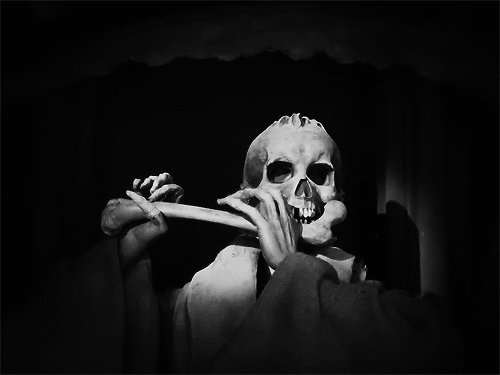

You are on altline
this website is an underground artist collection and recommendation bin for setu students to share and recommend new underground artists. Go over to bands to include a band you personally enjoy so that other students (and staff?) can check them out. We also have highland cow facts because, while it's not a competition, they are one of god's best creations and more must be educated on them.
